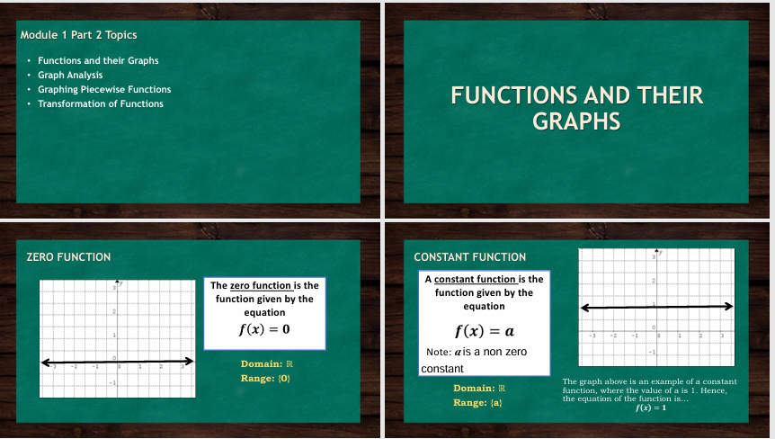
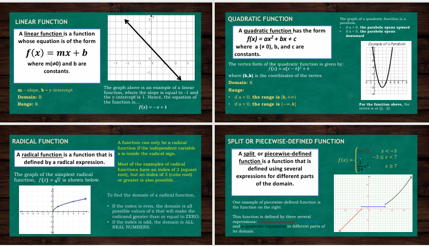
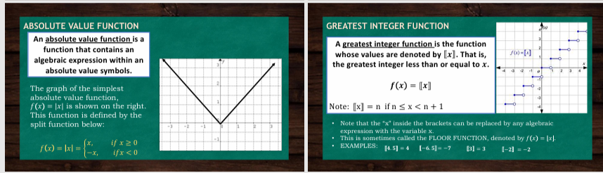

Function And their Graphs
-Functions and their graphs describe the relationship between a set of inputs (domain) and a set of outputs (range) by assigning each input exactly one output according to a specific rule, and when represented on a coordinate plane, the graph visually shows how the values change, making it easier to analyze patterns such as increase, decrease, intercepts, and symmetry; for example, the function has a graph shaped like a U called a parabola, which opens upward with its vertex at the origin .


